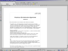

Openoffice.org Screenshots
Last updated 2002 September 5
Here you can admire some screenshots of the Openoffice.org Suite in action. We always welcome your screenshots, and if you want us to add them to the site, please check out the screenshot guidelines, and notify us. We will change the screenshots regularly, so check back often!
Added 5th September 2002. OpenOffice.org 1.0.1 running on the Microsoft Xbox! Thanks to Michael Steil of the amazing Xbox-Linux project.
| This is a shot of the OpenOffice splashscreen. | |
| This is a shot of Writer, showing some document. | |
| This is a shot of Writer, showing some other part of a document. |
{kind=link}
{kind=link}
{kind=link}
Added 7 May. Shots of OpenOffice.org 638c for Mac OS
X
Added 30th April (Koninginnedag!). Shots of OpenOffice.org 1.0
These screenshots are taken on a computer. With SuSE 7.3. And KDE3.
{kind=link}
{kind=link}
{kind=link}
Added 22 October 2001. Shots of the 638C build
These shots were taken from OpenOffice.org638C
(SuSE 7.2 Linux, KDE 2.2.1)
{kind=link}
{kind=link}
{kind=link}
The following shots were sent to us by Alex Bongers, and show OpenOffice635 running on Windows.
Interesting to note is how similar the interface looks on Windows and Linux. Thanks Alex!
|  | This shot shows Writer635 on Windows |
| Calc635 on Windows |
{kind=link}
{kind=link}
Older shots are here